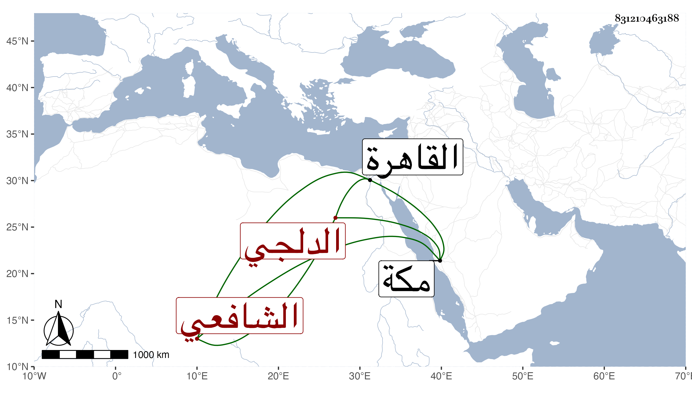

0902Sakhawi.DawLamic.ITO20230111-ara1.EIS1600.831210463188
Biography ID: 831210463188
708
محمد بن محمد بن محمد بن محمد بن أحمد بن يوسف زين العابدين أبو الفضل المدعو بالفرغل ابن الشمس البكري الدلجي الشافعي ابن أخت الشهاب الدلجي والماضي أبوه . ولد وحفظ القرآن وكتبا ولازمني مع أبيه بمكة في سنة ست وثمانين في سماع القول البديع وغيره ثم قدم القاهرة فاشتغل عند الشرف عبد الحق السنباطي في الفقه والعربية وعاد لبلده وتكرر مجيئه وهو فطن فيه قابلية وخير ولكنه تزوج . ومات في الطاعون سنة سبع وتسعين وثمانمائة .
